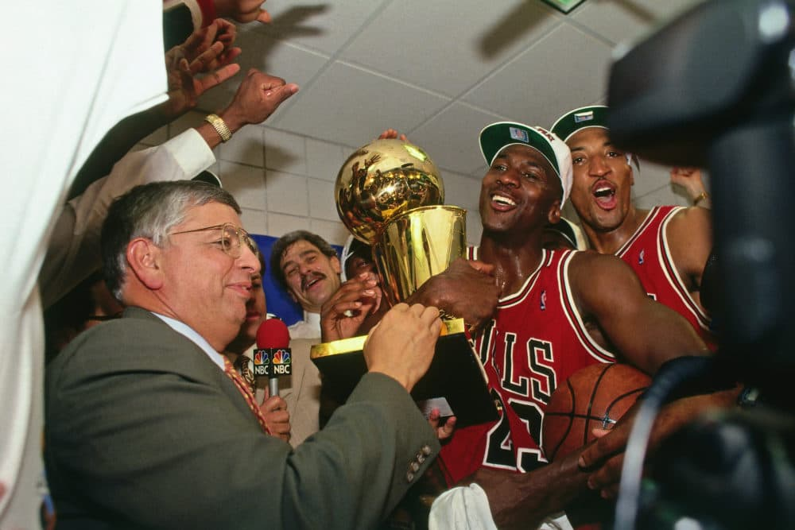

NBA Commissioner David Stern presents Michael Jordan and the Chicago
Bulls the championship trophy after the Bulls defeated the Phoenix
Suns in Game Six of the 1993 NBA Finals on June 20, 1993.
Here's a time line of the Chicao Bulls run:
1984-1985 - The bulls selected shooting guard
Michael Jordan. The team, with new management in owner Jerry
Reinsdorf and Jerry Krause in the front office, decided to rebuild
around Jordan. Jordan set franchise records during his rookie
campaign and led the Bulls back to the playoffs, for which he was
rewarded with a berth on the All-NBA second team and NBA Rookie of
the Year Award.
1985-1986 - was the 20th season of the franchise in
the National Basketball Association (NBA). During the offseason,
they signed free agent John Paxson. The season was a near disaster
as Michael Jordan was lost for much of the regular season due to a
broken foot. Despite the injury to Jordan, the team managed to
qualify for the NBA Playoffs.
1986-1987 - With yet another new head coach, Doug
Collins, in for 1986-87, the Bulls improved to 40-42. Chicago
qualified for the playoffs for the third straight season but was
again eliminated by Boston in the first round.
1987-1988 - The Bulls finished second in the
Central Division with a solid 50–32 record. Michael Jordan was named
the league's Most Valuable Player and Defensive Player of the Year.
He also won the All-Star Game MVP and Slam Dunk Contest during the
All-Star Weekend, which was held in Chicago. In the first round of
the playoffs, the Bulls defeated the Cleveland Cavaliers in five
games, but lost to the Detroit Pistons in five games in the
semifinals.
1988-1989 - In the Eastern Conference First Round
of the playoffs, the Bulls defeated the heavily favored, and
3rd-seeded Cleveland Cavaliers in five games, and the heavily
favored, and 2nd-seeded New York Knicks in six games in the Eastern
Conference Semi-finals. However, they would lose to the heavily
favored, and top-seeded Detroit Pistons four games to two in the
Eastern Conference Finals. Following the season, Doug Collins was
fired as head coach, and Vincent left in the 1989 NBA Expansion
Draft.
1989-1990 - In the playoffs, the Bulls defeated the
Milwaukee Bucks three games to one in the Eastern Conference First
Round, then defeated the Philadelphia 76ers four games to one in the
Eastern Conference Semi-finals. They advanced to the Eastern
Conference Finals before losing a seven-game series to the eventual
back-to-back champion Detroit Pistons.
1990-1991 - In the Eastern Conference First Round
of the playoffs, the Bulls swept the New York Knicks in three
straight games. Then in the Eastern Conference Semi-finals, they
defeated Charles Barkley and the 5th-seeded Philadelphia 76ers in
five games. In the Eastern Conference Finals, they swept the
defending champion Detroit Pistons in four straight games, and
advanced to the NBA Finals for the first time. After losing Game 1
at home, 93–91 to Magic Johnson and the Los Angeles Lakers, the
Bulls would win the 1991 NBA Finals in five games, winning their
first ever championship in franchise history.
1991-1992 - In the Eastern Conference First Round
of the playoffs, the Bulls swept the Miami Heat in three straight
games. In the Eastern Conference Semi-finals, they faced the New
York Knicks. The Bulls would lose Game 1 at home, but managed to win
the next two games, then take a 3–2 series lead until the Knicks won
Game 6 at home. The Bulls won Game 7 at home. As they advanced to
the Eastern Conference Finals, they would defeat the 3rd-seeded
Cleveland Cavaliers in six games. The Bulls would make their second
straight trip to the Finals.In the 1992 NBA Finals, they would go on
to beat the Portland Trail Blazers four games to two to win their
second consecutive championship.
1992-1993 - In the Eastern Conference First Round
of the playoffs, the Bulls swept the Atlanta Hawks in three straight
games. In the Eastern Conference Semi-finals, they swept the
Cleveland Cavaliers in four straight games. Then after losing the
first two games of the Eastern Conference Finals to the top-seeded
New York Knicks, the Bulls would win the next four games of the
series. Then they would then go on to win their third consecutive
NBA championship the Phoenix Suns in six games in the 1993 NBA
Finals.
1995-1996 - The Bulls swept the Miami Heat 3–0 in
the Eastern Conference First Round of the playoffs, defeated the
5th-seeded New York Knicks 4–1 in five games of the Eastern
Conference Semi-finals, then swept the Orlando Magic 4–0 in the
Eastern Conference Finals. They then defeated the Seattle
SuperSonics 4–2 in the 1996 NBA Finals, winning their fourth NBA
title in six seasons.
1996-1997 - In the playoffs, the Bulls would sweep
the Washington Bullets in three straight games in the Eastern
Conference First Round. In the Eastern Conference Semi-finals, they
defeated the Atlanta Hawks in five games. In the Eastern Conference
Finals, they defeated the Miami Heat in five games to advance to the
NBA Finals, where they the Utah Jazz in six games for their fifth
title in seven years.
1997-1998 - In the playoffs, the Bulls swept the
New Jersey Nets 3–0 in the Eastern Conference First Round, defeated
the Charlotte Hornets 4–1 in the Eastern Conference Semi-finals.
Then the Indiana Pacers 4–3 in the Eastern Conference Finals en
route to advance to the NBA Finals. In the Finals, they met the Utah
Jazz in a rematch from the prior year's NBA Finals and just like
last year, they would go on to defeat the Jazz in six games to win
the championship. The championship was their sixth in eight years
and completed the franchise's second "3-peat". This was Jordan's
last season as a Bull, as he announced his second retirement after
it was over.
"Borlaug's life and achievement are testimony to the far-reaching
contribution that one man's towering intellect, persistence and
scientific vision can make to human peace and progress." -- Indian
Prime Minister Manmohan Singh
If you have time, you should learn more about chicago bulls best run
on
Wikipedia